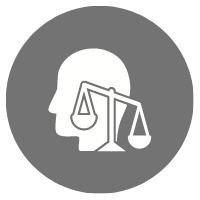

HAKKIMIZDA
Opia Psikoloji Merkezi Ege Üniversitesi Psikoloji Bölümünden mezun Psikolog kadrosuyla ruh sağlığı alanında hizmet vermekte olan bir kurumdur. Kurumumuzun amacı danışanlarımızın iyi oluş haline katkı sağlamaktır. Opia Psikoloji Merkezi, bünyesinde barındırdığı uzmanlar aracılığıyla bu hizmeti verirken gizlilik ve mahremiyet ilkelerine önem vermektedir.
ATÖLYELER
Opia Psikoloji Merkezi bünyesinde psikologlar aracılığıyla duygu farkındalığı, dikkat geliştirme, kaygı gibi pek çok farklı konunun ele alındığı atölyeler çocuk ve ergenlerin gelişimlerine katkı sunarken yetişkinler için de bir keşif yolculuğu imkanı sunmaktadır. Bu atölyeler oluşturulurken sanat terapisine sıkça yer verilmekte, böylece bireyler fiziksel ve zihinsel bir rahatlama yaşarken stres ve problemle baş etme becerilerini de geliştirmektedir.

ETİK SORUMLULUK
Yaptığımız işin öneminin ve sorumluluğunun farkında bir kurum olarak, bu işi yaparken bütün canlıların varoluş biçimlerine ve haklarına saygı duymak en temel etik ilkemizdir.

"Kabul etmedikçe hiçbir şeyi değiştiremeyiz."
Carl Gustav Jung
HİZMETLER
Merkezimizde çocuk, ergen ve yetişkinlere hizmet veren çalışma arkadaşlarımız bulunmaktadır. Bu kapsamda yaş fark etmeksizin merkezimize başvurabilirsiniz. Yüz yüze danışmanlık alma imkanı olmayan danışanlarımız online olarak danışmanlık alabilirler.
.png)
"Ne Zaman Psikoloğa Gitmeliyim?"
-İnsanlar için bu sorunun cevabı oldukça değişkendir. Psikoloğa gitmek için çok büyük ya da çok küçük olarak tanımladığınız sorunlarınız olabilir. Yaşadığınız problem sizi rahatsız
edici boyuttaysa, günlük hayatınızda (okul, iş, sosyal çevre gibi alanlarda) işlevselliğinizi düşürmeye başladıysa terapi desteğine ihtiyacınız olduğu söylenebilir. Burada dikkat edilmesi gereken nokta böyle bir ihtiyaç
hissedip hissetmediğimizdir. Ancak bilişsel gelişimin tamamlanmadığı yaşlarda ve bazı psikolojik rahatsızlıklarda bireylerin ihtiyaçlarını ifade edemeyebildiğini de unutmamak gerekir.
.jpeg)
Merkezimizde uygulanmakta olan çocuk, ergen ve yetişkinlere yönelik Değerlendirme Testlerinden bazıları:
-Ankara Gelişim Envanteri
-Metropolitan Okul Olgunluğu Testi
-Frostig Gelişimsel/Görsel Algı Testi
-Beier Cümle Tamamlama Testi
-D2 Dikkat Testi
-Burdon Dikkat Testi
-Sınav Kaygısı
Ölçeği
-Beck Depresyon Ölçeği
-Minnesota Çok Yönlü Kişilik Envanteri (MMPI)
"İyileşmenin ilk şartlarından birisi de; kişinin şaşırarak kendi bilmediği yönlerini tanımasıdır."
Erich Fromm
Duyurular ve Güncel Yazılar

Online Terapi Nedir?
Online terapi çeşitli nedenlerle yüzyüze hizmet alamayan birçok kişi için son zamanlarda sıkça tercih edilen bir model haline gelmiştir. Bu nedenlerden bazıları; sosyal fobi, bedensel bir kısıtlama, çok sık seyahat etme, yaşanılan
yerde terapi hizmetine ulaşamama, yoğun iş temposu, farklı bir ülkede yaşayan bireyler için anadilde danışmanlık alma şeklinde sıralanabilir. Online psikolojik danışmanlık sürecinde de yüzyüze yürütülen süreçte olduğu gibi
etik ve gizlilik ilkelerine önem verilmektedir. Seanslarda ses ve görüntü kaydı alınmamaktadır. Biz de Opia Psikoloji Merkezi olarak, İzmir Göztepe’de yüzyüze danışmanlık hizmeti verdiğimiz gibi online danışmanlık hizmeti
de sağlamaktayız. Online danışmanlıkla ilgili ayrıntılı bilgi almak için bize ulaşabilirsiniz.
- Online Danışmanlık
- Depresyon
- Kaygı Bozukluğu
- Bipolar Bozukluk
- Boşanma
- İlişki Sorunları
- Yetişkinler ve Çocuklar İçin DEHB Yönetimi
- Kayıp ve Yas
- Sağlık Psikolojisi
- Bağımlılık
- Cinsel Yönelim ve Cinsiyet Kimliğiyle İlişkili Sorunlar
- Doğum Süreci
- Oyun Terapisi
İLETİŞİM
- Telefon: 0 (552) 478 74 31
- E-mail: opiapsikolojimerkezi@gmail.com
- Adres: İnönü Cd. No: 390 Büyükseyran Apt.
Kat:5/56 Göztepe/İzmir